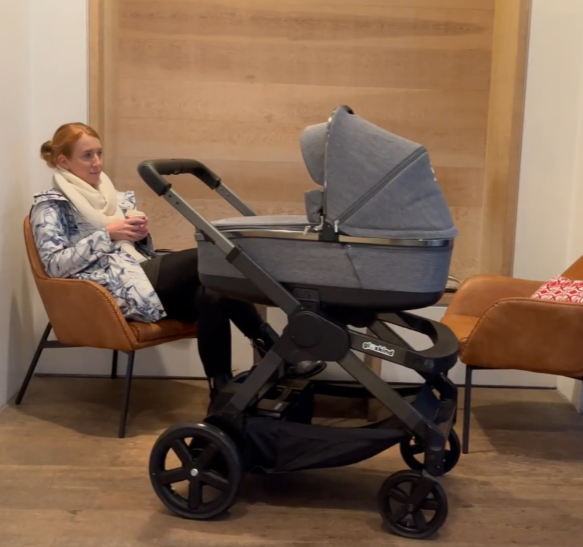

An AI stroller that thinks it’s a Tesla.

Parenting is hard — so some startup somewhere clearly asked, “What if the stroller could do more than just be pushed?” Enter the world of Glüxkind, a Vancouver-based company building AI-powered strollers that aim to turn every walk into a *semi-autonomous mission*. At the top of their lineup is the *Ella* (and its newer flagship *Rosa*), an AI “smart stroller” that can assist with uphill climbs, automatically brake on downhills, and adopt hands-free cruising modes when needed. It’s essentially a baby carriage with chips in its wheels and the over-eager confidence of a self-driving car. :contentReference[oaicite:0]{index=0}
Under the hood you’ve got an AI-driven system Glüxkind calls “Advanced Parent Assist,” which mix and matches electric push assistance, adaptive braking, and 360° obstacle sensing so you don’t have to wrestle a stroller + groceries + toddler all at once. It even has features like “Rock-My-Baby” for naps on the go and white noise playback for zen stroller naps. And while the self-driving mode has sparked its share of headlines and eyebrows — yes, there *is* autonomous navigation when the stroller is empty — the stroller generally stays within arm’s reach and keeps adults in control. :contentReference[oaicite:1]{index=1}
None of this comes cheap — Ella started life with a price tag near **$3,300** and has been selling out or on backorder as Glüxkind continues production — with Rosa positioned as their premium flagship version. Parents, grandparents, and stroller aficionados are divided between “this makes everything easier” and “I kind of want to push it myself”… which might just be the ultimate baby tech paradox: a stroller that’s both a lifesaver and a slight identity crisis for anyone who ever thought pushing a pram was *just fine*. :contentReference[oaicite:2]{index=2}
Watch it in action:
youtube.com/watch?v=mAsSqKy9AdE